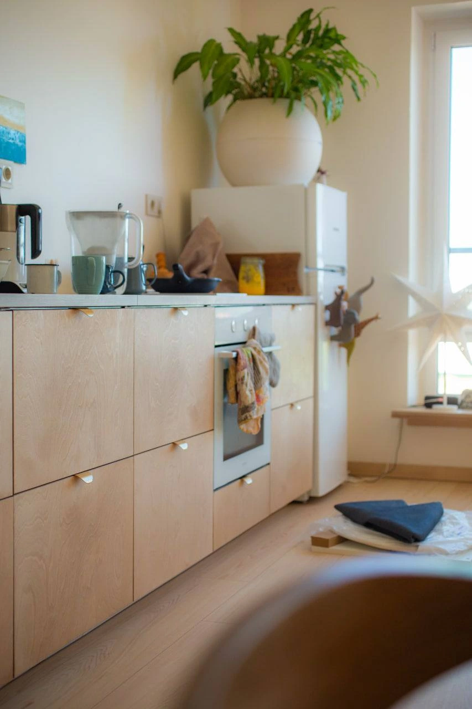

МЕБЕЛЬ ИЗ ФАНЕРЫ И МАССИВАМебель.
Мебель.
По вашим меркам.
Столярная мастерская в Санкт-Петербурге. Мебель из фанеры и массива по индивидуальным параметрам для дома и общественных пространств.
Обсудить мой проект
МАТЕРИАЛЫ И РЕШЕНИЯМатериал, который
Материал, который
хочется рассмотреть.
Фактура дерева, детали фасадов и точные размеры. Продумываем изделия вместе с пространством, в котором вы будете ими пользоваться.
Рассчитать мой проект